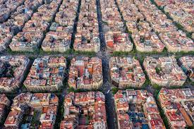

PERSONAL WEB PAGE
Tshilidzi Mamatho
My City:
Barcelona
The city of Barcelona it is in Spain. Barcelona, the cosmopolitan capital of Spain’s Catalonia region, is known for its art and architecture. The city is rich in history and culture. With many tourist that vist yearly. The fantastical Sagrada Família church and other modernist landmarks designed by Antoni Gaudí dot the city. Museu Picasso and Fundació Joan Miró feature modern art by their namesakes. City history museum MUHBA, includes several Roman archaeological sites.
Foreign Language:
Spanish
The Spanish language, the native langauge of Spain the most widely spoken lange in the country. Spanish/español is a Romance language of the Indo-European language family that evolved from colloquial spoken Latin in the Iberian Peninsula of Europe. Today, it is a global language with nearly 500 million native speakers, mainly in the Americas and Spain. Spanish is the official language of 20 countries. It is the world's second-most spoken native language after Mandarin Chinese; the world's fourth-most spoken language overall after English, Mandarin Chinese, and Hindustani (Hindi-Urdu); and the world's most widely spoken Romance language.
Spanish Phrases and English Translation
| Spanish | English |
| Hola | Hello |
| Cómo estás | How are you |
| Gracias | Thank you |
Favourite Subjects:
1. Full Stack Web Development for 4IR

Discovering the world of coding on the Full Stack Web Development. developing applications and systems that can be used to solve our daily challenges that we encounter.
2. Engineering Business Systems for 4IR
Will to learn Engineering Business System. Introducing to the world where technology meets the business aspects of the business to improve ways of how to carry out tasks.
3. 4IR Technologies Bootcamp
Learning opportunity in the field of Technologies Bootcamp. Discovering and implimating new ways to comminicate with machines an technology through machine learning.